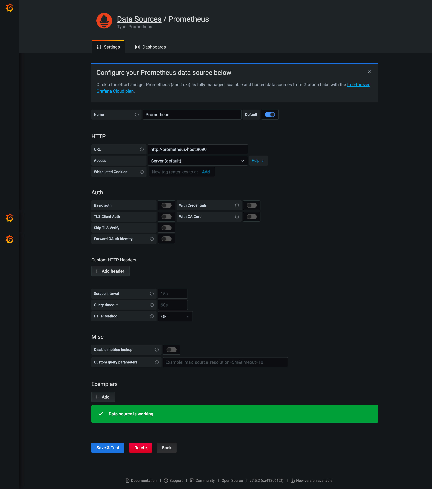

Metrics configuration
Metrics configuration and how to import metrics of Prebid server to Grafana through Prometheus stack.¶
These are the parameters that are capable for metrics collection¶
- PBS_METRICS_PROMETHEUS_PORT=9100 - default is 0.
If PBS_METRICS_PROMETHEUS_PORT is null, your Prebid server won't collect any metrics.
- PBS_METRICS_PROMETHEUS_NAMESPACE=prebid - default is empty.
PBS_METRICS_PROMETHEUS_NAMESPACE - this is responsable for the primary prefix added to your metrics to ensure uniqueness within your cluster.
- PBS_METRICS_PROMETHEUS_SUBSYSTEM=server - default is empty.
PBS_METRICS_PROMETHEUS_SUBSYSTEM - this is a secondary prefix added to metrics to ensure uniqueness.
- PBS_METRICS_DISABLED_METRICS_ADAPTER_CONNECTIONS_METRICS=false - default is true.
PBS_METRICS_DISABLED_METRICS_ADAPTER_CONNECTIONS_METRICS - If this flag is set to true you won't get any bidder http connection adapter metrics (e.g. number of new vs reused connections) but you'll still get other adapter metrics.
If you're going to get metrics though Prometheus and Prometheus stack has been already installed, you have several options, please chose one:¶
-
change environments into code (bad way).
-
create pbs.yaml if it hasn't been already created (It works, but not flexible).
-
input the parameters into global environments (Highly recommend you to use this way also it's reliable).
Finally, when you fill in your credentials of metrics, please, run:¶
- build your app
- run the server
Make sure that an application returns any metrics - http://localhost:9100/, if not, please check your names of environment and recompile again.¶
Add your host and port into prometheus.yml file on the instance of your Prometheus.¶
global:
scrape_interval: 15s
evaluation_interval: 15s
external_labels:
monitor: 'docker-host-alpha'
rule_files:
- "alert.rules"
scrape_configs:
- job_name: 'prometheus'
scrape_interval: 10s
static_configs:
- targets: [ 'prometheus-host:9090']
- job_name: 'prebidserver-metrics'
scrape_interval: 10s
static_configs:
- targets: ['prebidserver-host:9100' ]
alerting:
alertmanagers:
- scheme: http
static_configs:
- targets:
- 'localhost:9093'
Import data source as Prometheus into Grafana¶
Just fill in host and port of Prometheus
